Classroom presentation
Module 2: Onshape Product Drawing
One editable eight-slide deck will teach this module's three named sections.
Download PowerPointModule 2
Build accurate, recoverable product models and drawing evidence while choosing exports and versions for a clear purpose.
Three section packages · browser-local progress
Classroom presentation
One editable eight-slide deck will teach this module's three named sections.
Download PowerPointSection 01
Organise an Onshape document, choose a sketch plane deliberately and use constraints to capture geometric relationships.
Theory
When you first use Onshape, it helps to understand where your work lives before worrying about drawing anything.
An Onshape document is the main container for related design information. Unlike CAD systems that depend mainly on separate files, an Onshape document can organise different types of design information together. A document can contain Part Studios, assemblies, drawings, imported information and other related data. These appear as separate tabs within the document. Onshape
A tab is therefore one section of a document. Selecting a tab changes the design information or working environment you are viewing.
For this section, the important tab is the Part Studio. A Part Studio is the Onshape environment used to create and edit sketches and parts. It contains a graphics area, a Feature list and tools for developing geometry. A Part Studio is not itself the finished model; it is the environment in which the model is developed. Onshape
Inside a Part Studio, several ideas fit together:
A sketch is 2D geometry drawn on a selected plane. Sketches can contain lines, rectangles, circles and other curves, together with dimensions and constraints.
A feature is a modelling operation recorded in the Feature list. Features will later allow you to turn or modify sketch geometry into 3D geometry.
A part is a 3D solid body produced through modelling operations.
This gives you a useful mental map:
Document → Part Studio tab → sketches and features → part
Onshape stores sketches parametrically and displays them in the Feature list. This means a sketch is not just a temporary drawing that disappears when you begin modelling. It remains part of the model's history and can influence later features. Onshape
Visual observation — document map: Look at an open Onshape document. Find the document name, the active Part Studio tab, the Feature list and the graphics area. Ask yourself: Which level am I looking at — the whole document, a tab, a sketch, a feature or a part?
Understanding this structure matters because CAD involves relationships. You are not simply drawing lines that look correct. You are building organised geometry that can be edited and developed into accurate models.
Every sketch needs somewhere to exist.
A plane is a flat reference surface used to locate and orient sketch geometry in 3D space. Every Onshape Part Studio provides three default planes: Top, Front and Right, together with an origin. Onshape
The origin is the fixed reference point where the default coordinate system begins. It gives you a reliable location from which geometry can be positioned.
When you create a sketch, Onshape requires you to select one sketch plane at a time. Onshape That choice matters because the plane controls the orientation of the sketch in the 3D model.
Imagine drawing a rectangular nameplate. If you sketch its main outline on the Top plane, its flat face initially lies horizontally in the model space. If you choose the Front plane, that same outline is oriented vertically when viewed in 3D. The rectangle might have exactly the same dimensions in both cases, but its orientation is different.
This means plane selection should not be random.
Before beginning a sketch, ask:
Which face or view of the intended object am I defining, and which plane makes that orientation sensible?
For a complete beginner, choosing between Top, Front and Right is less about memorising a rule and more about predicting what will happen next. Think about how the 2D sketch should sit when it becomes part of a 3D model.
This connects directly to technical communication. The NSW Stage 5 Communication Technology curriculum includes using CAD to develop 3D models and a range of technical drawings, as well as understanding principal planes when representing different views. NSW Curriculum Choosing and understanding planes is therefore part of thinking spatially, not simply operating software.
Drawing the approximate shape is only the beginning of a good CAD sketch.
A dimension gives geometry a numerical value, such as a length, distance, diameter or angle. In Onshape, dimensions form part of the system that controls sketch geometry. Onshape
A constraint defines a geometric relationship. Instead of saying how large something is, a constraint can describe how one piece of geometry must behave in relation to another. For example, lines might be required to remain horizontal or vertical, points might remain together, or geometry might maintain another intended relationship.
The difference is important:
Dimensions control values. Constraints control relationships.
Together they help capture design intent — the important relationships and measurements that you intend the design to preserve when it is edited.
Suppose a rectangular outline is intended to remain centred on the origin. Simply dragging it until it looks centred does not clearly capture that intention. If its position can later move freely, Onshape has not been told enough about what you actually want.
This introduces a useful CAD idea called a degree of freedom. A degree of freedom is a way in which sketch geometry can still move or change. Geometry might still be able to slide sideways, move vertically, rotate or change size depending on which relationships have already been defined.
The goal is not to attack every degree of freedom by adding random dimensions and constraints. The goal is to add purposeful information that describes the intended geometry.
Visual observation — constraint progression: Watch the same simple outline at three stages: newly drawn, partly constrained and fully defined. Try dragging the geometry after each stage. Identify what can still move and why, rather than simply counting dimensions or constraints.
Onshape can infer some constraints while you draw, and you can add others manually. Onshape This makes it important to notice what relationships already exist before adding more.
More constraints are not automatically better. A clear sketch uses enough information to describe the intended relationships without unnecessarily defining the same thing twice.
Onshape provides visual feedback about sketch status. Current Onshape documentation identifies blue geometry as underconstrained, black as fully constrained and red as indicating a constraint problem. Constraint icons also provide status information, including problem indicators. Onshape
Those colours are useful, but do not rely on colour alone.
A better habit is to investigate the sketch.
First, drag geometry carefully. Onshape specifically notes that dragging entities can help reveal which dimensions or constraints may still be required. Onshape If something moves that you expected to remain fixed, ask what relationship is missing.
Second, read the constraint icons. Onshape can display the constraints defined in a sketch, and hovering over a constraint icon can identify the geometry to which it applies. Onshape
Third, inspect problems rather than adding more controls blindly. If a sketch develops a conflict, identify which dimensions or constraints are competing.
For example, imagine that a line has already been constrained to remain horizontal. You then introduce another relationship that attempts to force the same geometry into an incompatible position. The useful response is not to keep adding constraints until the warning disappears. Inspect the affected geometry and determine which relationship actually represents the design intent.
A sketch can also contain redundant information: two controls may be trying to define a relationship that has already been established. The question should always be:
What does this dimension or constraint tell Onshape that it does not already know?
Visual observation — conflict diagnostic: When a constraint problem appears, look at the affected geometry and constraint icons. Hover over or inspect the relationships and ask: Which two instructions are competing, and which one best represents the intended geometry? Do not diagnose the problem from colour alone.
This is a much stronger CAD habit than memorising an interface colour chart.
Consider a fictional nameplate that exists only as a CAD exercise on screen. The aim is to produce a simple centred rectangular outline that could later be used to create a feature.
1. Locate the working environment. Start by identifying the active Part Studio within the document. Check the tab and Feature list so you know where the sketch will be created. A document can contain multiple tabs, so being aware of the active tab prevents confusion about where geometry belongs. Onshape +1
2. Choose the plane deliberately. Suppose you want to begin by looking squarely at the broad face of the nameplate. Select the Front plane because, for this example, you want that broad rectangular face oriented as a front-facing profile in the model. The important lesson is the reason for the choice, not that every nameplate must use the Front plane.
3. Create the outline around the origin. Draw a rectangular outline so that its intended centre corresponds with the origin. Do not assume that looking centred means it is actually controlled. The origin provides a fixed reference; the sketch still needs relationships that express your intention.
4. Test what remains free. Before adding lots of information, drag the geometry carefully. Can the outline move sideways? Up and down? Can its width or height change? Each remaining movement reveals a degree of freedom.
5. Add purposeful relationships and illustrative dimensions. Add only the relationships needed to describe the intended rectangle and its centred position. Then use dimensions to define its intended proportions — for example, an illustrative width of 80 mm and height of 30 mm. These values belong only to this fictional screen exercise; the important idea is that dimensions state size while constraints establish geometric relationships.
6. Read the result. Test movement again. Look at the constraint icons and the sketch-status feedback. Ask whether the sketch now behaves as intended. A good result is not merely geometry that looks right; it is geometry whose important relationships are deliberately controlled.
7. Diagnose a conflict rather than piling on another constraint. Imagine you accidentally add a second relation that competes with an existing relationship controlling the centred outline. Onshape indicates a constraint problem. Stop. Inspect the relevant icons and geometry, determine what is already controlling the outline, and remove or correct the unnecessary relation. Onshape provides constraint diagnostic tools specifically to help analyse and correct constraint errors. Onshape
Before you build a feature
Check four things:
Part Studio: Am I working in the intended modelling environment?
Plane: Does the sketch plane give the geometry the orientation I intended?
Intent: Do the dimensions and constraints describe the important size and relationships?
Status: Have I tested movement, read the constraint icons and investigated any conflicts instead of relying only on colour?
Once those answers make sense, the sketch is ready to become the basis for a feature. Onshape uses 2D sketches as a basis for developing 3D models, with sketches and later features retained in the Part Studio's parametric history. Onshape +1
The next step is therefore more than turning a flat outline into a 3D shape. You will begin using features to carry accurate sketch geometry into the model while preserving the design intent you established here.
Purposeful visuals
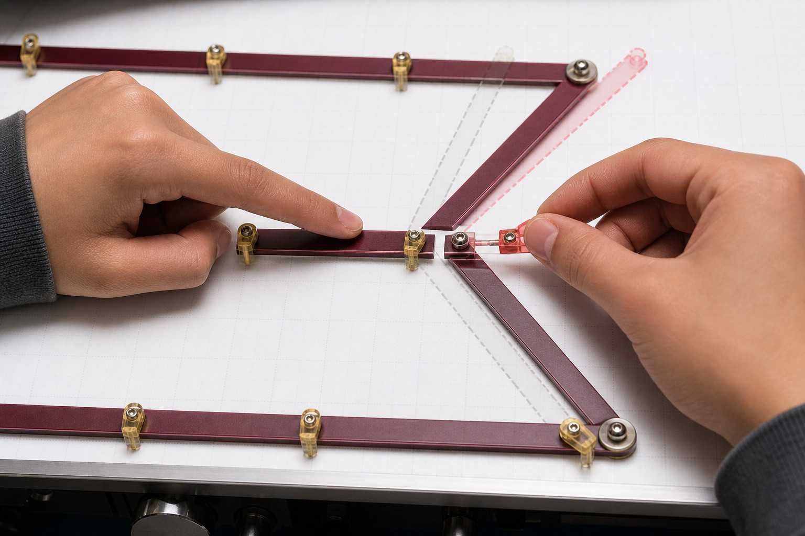
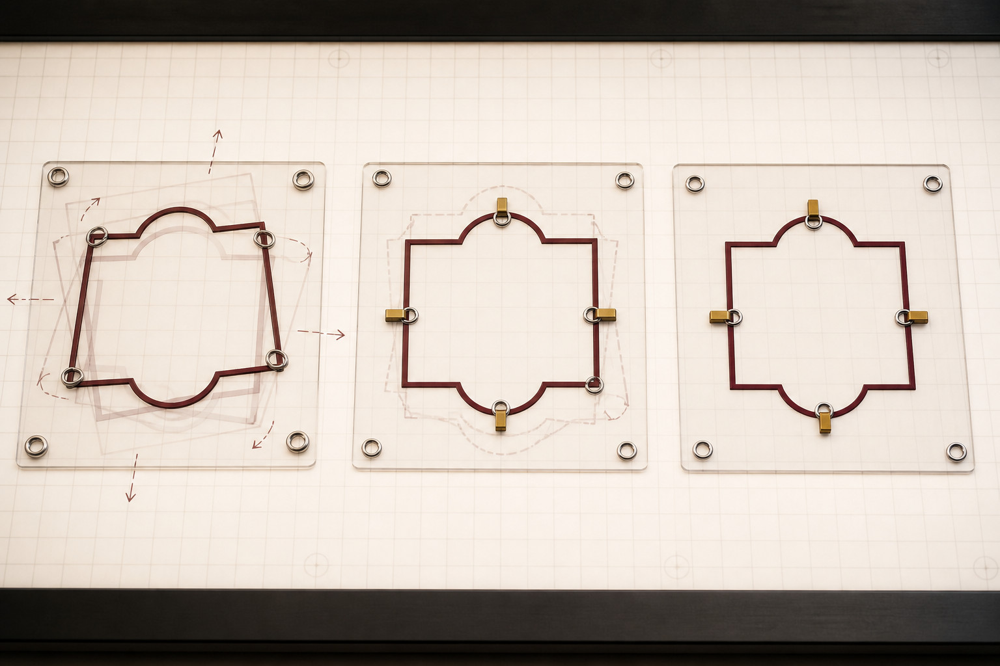
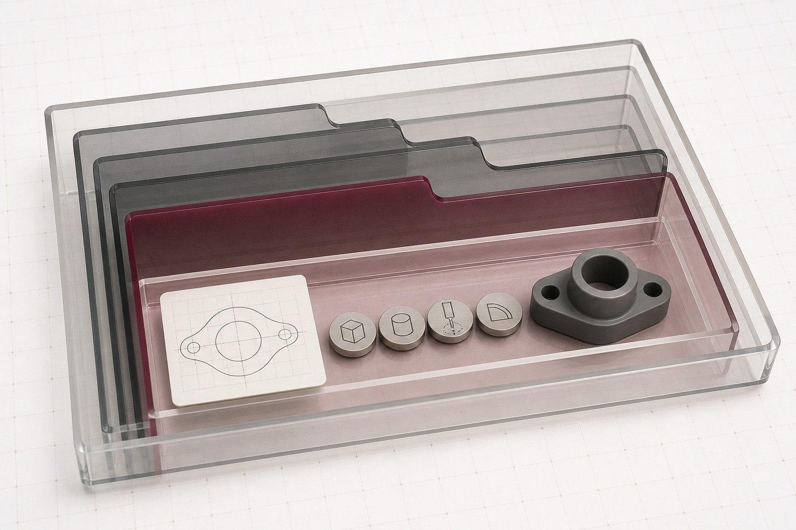
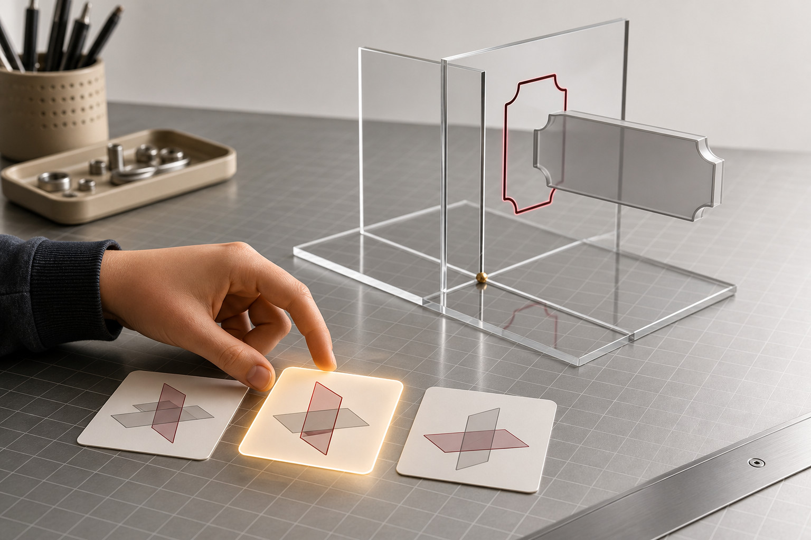
Media pathway
Watch or read for: Which relationship is being protected by each constraint, and how would the sketch still move before that relationship is added?
Use the reading and still-image pathway below; no video is required for this section.
Primary source: Working with Constraints. Return to the theory explanation.
Applied Learning Activity
Diagnose which intended relationship is missing from a simple Onshape sketch scenario.
Open the full activityFormative learning evidence
This browser-local record is not formal submission or teacher verification.
Higher-order capstone · justify
Section 02
Build features in a readable order and distinguish measured accuracy from robust design intent.
Theory
When you create a model in Onshape, you are not simply making a final 3D shape. You are building a sequence of modelling decisions. Onshape records these decisions as features in the Feature list. A feature is an operation that creates, modifies or manipulates geometry. Examples include sketches, extrudes, patterns and shells. Onshape
The ordered sequence of these operations is the model’s feature history. Think of it as the model’s construction story:
Sketch → Extrude → Cut → Pattern
The order matters because later features often rely on geometry created earlier. This relationship is called a dependency. A dependent feature needs something created or defined earlier in the model. For example, a cut might depend on a sketch drawn on a face produced by an earlier extrude.
An extrude adds depth to a selected sketch region or planar face along a straight path. Depending on the settings chosen, it can create a new part or modify existing geometry. Onshape
Feature history becomes particularly important when a model changes. Suppose an early sketch controls the overall shape of a part. If you edit that sketch, Onshape recalculates the later features. Features with sensible dependencies may update successfully. A poorly chosen reference may no longer exist in the form expected by a later feature, causing that feature to fail.
This leads to the idea of robustness. A robust model is organised so that reasonable changes to important controlling values and relationships are likely to produce a predictable result. Robustness does not mean that a model can survive every imaginable change. It means its structure makes sense for the changes the design is expected to undergo.
Visual analysis — Feature-tree story
Imagine two models that look identical on screen. Model A has a clear sequence: constrained base sketch, base extrude, cut sketch, subtractive extrude and pattern. Model B contains a confusing collection of loosely related sketches and individually copied details. Ask: Which feature tree communicates the modelling decisions more clearly, and which is easier to investigate when something changes?
A good feature history is therefore more than a technical record. It helps communicate how the model was intended to work.
Creating an extrude involves more than choosing a profile and giving it depth. You must also consider the result type: the intended geometric result of the operation.
For solid extrudes, Onshape provides four important result operations:
New creates new geometry as a new part.
Add creates geometry that is added to existing geometry.
Remove, sometimes described generally as subtracting, takes geometry away from an existing part.
Intersect keeps only the geometry where the relevant geometry overlaps. Onshape
The correct choice depends on your design intent. Design intent is the logic behind how the model is supposed to behave and how its important geometric relationships should be maintained when changes occur.
Imagine a simple solid base. If another extruded shape is supposed to become part of that base, Add expresses that intention. If the shape represents an opening, Remove expresses a different intention. If you need only the shared region created by overlapping geometry, Intersect expresses that result. Choosing New instead means you intend to create a separate part rather than modify the existing one.
Visual analysis — Result-type map
Picture the same sketch profile being extruded towards an existing solid four times. With New, it remains new geometry. With Add, the intended result joins geometry. With Remove, overlapping geometry is taken away. With Intersect, only the overlapping region remains. Ask: How can the same starting profile produce four different results simply because the modelling intention changes?
The word Boolean is also used for operations that combine parts through geometric relationships. In Onshape, Boolean operations include Union, Subtract and Intersect. Union combines parts, Subtract removes selected geometry from another part, and Intersect keeps their common region. Onshape
Another useful feature is Shell. A shell removes selected faces and creates walls from the remaining geometry. Onshape The important idea at this stage is not to memorise every feature tool. It is to recognise that features represent different modelling intentions: create geometry, add it, remove it, repeat it, combine it or transform an existing form.
Many designs contain repeated geometry. You could sometimes create each repeated detail separately, but that does not necessarily communicate the design clearly.
A pattern is a feature that creates repeated instances according to defined pattern settings. A linear pattern, for example, can repeat selected entities in a direction with controlled spacing and a specified number of instances. Onshape can pattern parts, features or faces. Onshape
Patterns matter because repetition itself can be part of the design intent.
Suppose a design contains several matching openings arranged in a regular row. Manually creating each opening can make the feature history look as though they are unrelated details. Creating one opening and then patterning it says something more useful:
These details are meant to repeat according to one rule.
That makes the model easier to understand and can make later changes more efficient. If the repeated arrangement changes, editing the pattern can control the group rather than requiring separate edits to a collection of manually copied details.
This does not mean every similar-looking object must be patterned. A pattern is appropriate when the repeated geometry genuinely shares a repetition rule. If each feature needs a different location or different behaviour, forcing them into one pattern may hide rather than express the design intent.
The useful question is therefore not simply, “Can I copy this?” It is:
“Is repetition an important relationship in this design?”
If the answer is yes, a pattern can encode that relationship more clearly than a set of independent copies.
In CAD, it is easy to confuse accuracy with displaying increasingly precise-looking numbers. A model does not become better merely because more decimal places appear on screen.
For our purposes, accuracy involves four connected ideas:
correct relationships + suitable values + reliable change behaviour + fitness for purpose
Correct relationships matter because geometry should behave as intended. If two elements are supposed to remain centred, parallel, equal or otherwise related, that relationship should be captured appropriately rather than depending on where they happened to be dragged.
Suitable values matter because important sizes and positions need deliberate control. However, entering an unnecessarily precise-looking value does not repair poor modelling logic.
Reliable change behaviour matters because a model should be tested rather than judged only from its current appearance. If an important value changes, the dependent geometry should respond in a way that still reflects the intended relationships.
Finally, the model needs to be fit for its purpose. A technically complicated model is not automatically more accurate than a simpler model whose relationships clearly represent the intended object.
Visual analysis — Change-propagation comparison
Imagine two apparently identical models. In the first, a repeated detail is related to the base and controlled through a pattern. In the second, several details were positioned independently until they looked right. Now change one controlling value in the base. Ask: Which relationships should survive, what should move, and what would a failed or unexpected update reveal about the model?
This is why constraints, features and dependencies belong together. Constraints capture important relationships within sketches. Features turn sketches and existing geometry into new geometric results. Dependencies connect later decisions to earlier ones. Design intent gives those choices a reason.
A successful model is not merely accurate at one frozen moment. Its behaviour should make sense when an expected change is made.
Consider a fictional desk tag being developed entirely on screen in Onshape. The aim is to create a simple base form containing one cut detail and a regularly repeated feature.
Before touching the modelling tools, identify the relationships that should survive reasonable changes:
the base should retain its intended overall proportions and constrained relationships;
the cut should remain meaningfully located relative to the base rather than merely sitting at an accidental screen position;
the repeated features should remain a regular group;
changing an important controlling value should not randomly destroy unrelated geometry.
Start with a constrained base sketch. The important geometry is related deliberately rather than positioned only by eye. Extrude the closed base profile using New, because the intention at this point is to create the initial part. Onshape’s Extrude tool turns the planar sketch region into geometry with depth. Onshape
Next, create the sketch needed for an opening in the tag. Extrude this profile using Remove so the operation takes geometry away from the base. The Feature list now communicates a logical sequence: first establish the base, then create a subtractive detail.
Create one additional feature that will be repeated. Instead of manually producing several independent copies, use a pattern to repeat it according to a common rule. The feature history now tells a clearer story:
Base Sketch → Base Extrude → Cut Sketch → Remove → Repeated Feature → Pattern
Now test the model.
Change one clearly controlling value in the base sketch — for example, the value controlling the overall length of the fictional tag. Do not judge the result merely by whether Onshape accepts the edit. Look at what happens throughout the model.
A successful update would preserve the relationships that were intended to survive. The base changes predictably, the cut remains meaningfully related to it, and the patterned features continue to behave as a regular group. The model has demonstrated useful robustness.
A failed reference tells a different story. Perhaps a later sketch or feature depended on a particular piece of geometry that disappeared or changed when the base was edited. Onshape can no longer rebuild that dependent feature as expected. The failure is useful information: it identifies a dependency that may not represent the design intent robustly.
The response should not be to hide the error or randomly rebuild features until the model looks right again. Trace the feature history. Find the first failed or unexpected feature. Ask what it depended on, what changed earlier in the tree, and whether a more meaningful reference or relationship would better represent the intended design.
Model-check routine
Before treating a model as complete, use a short check:
Read the Feature list. Does the sequence clearly represent how the model was intended to develop?
Check result types. Are New, Add, Remove or Intersect being used for the geometric result actually intended?
Check repetition. Where geometry follows one repeated rule, is that relationship represented clearly?
Test one meaningful change. Edit a controlling value and inspect how later features respond.
Investigate failures. Find the earliest broken dependency rather than simply repairing the final appearance.
Check the result against its purpose. Does the final geometry still express the intended relationships?
This modelling logic becomes important in the next stages of product drawing. A well-structured Onshape model provides a stronger basis for communicating the design through drawings and dimensions, while exports and versions deal with different ways of representing, sharing and managing model information. The clearer your features, dependencies and design intent are now, the easier it becomes to communicate what the design is meant to be later. curriculum.nsw.edu.au +1
Purposeful visuals
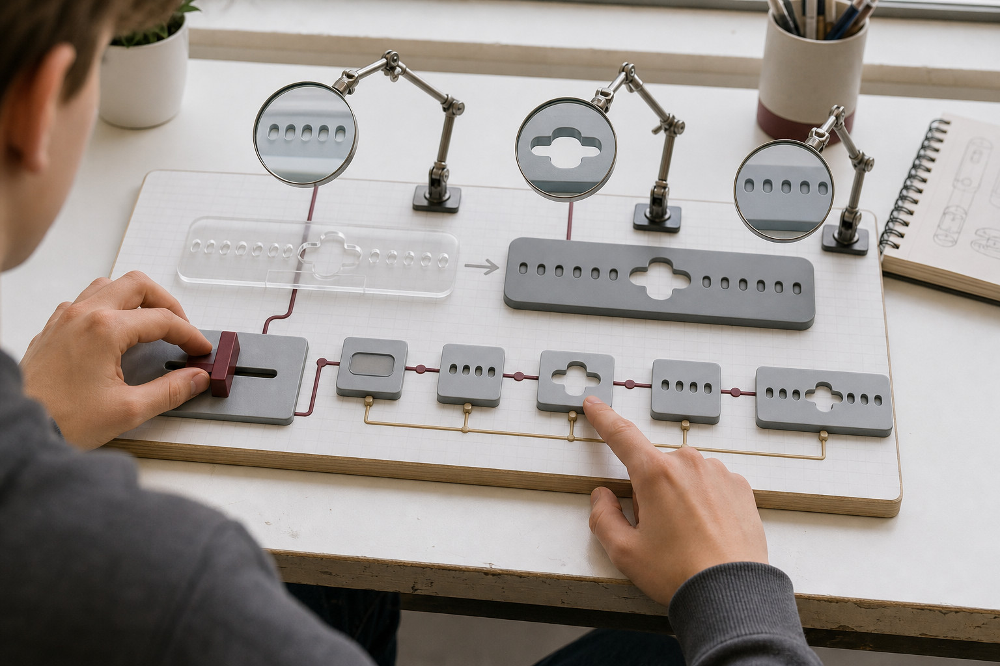
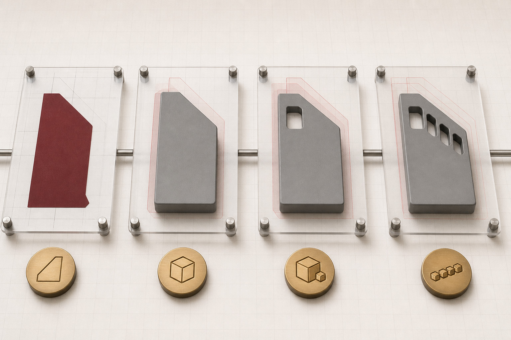
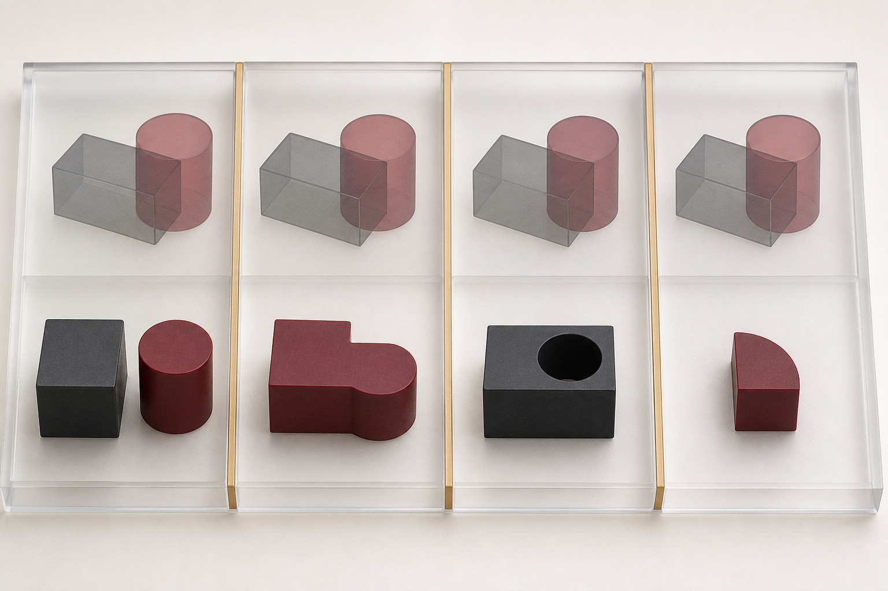
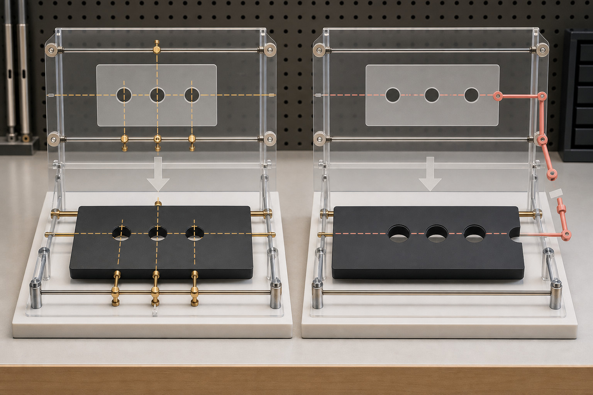
Media pathway
Watch or read for: What relationship between parts or features becomes easier to manage when related design information is organised deliberately?
Use the reading and still-image pathway below; no video is required for this section.
Primary source: Part Studios. Return to the theory explanation.
Applied Learning Activity
Identify a fragile feature dependency and propose a more readable Onshape modelling decision.
Open the full activityFormative learning evidence
This browser-local record is not formal submission or teacher verification.
Higher-order capstone · justify
Section 03
Turn an Onshape model into purposeful drawing evidence, then choose export and version actions for a defined handoff.
Theory
A finished-looking 3D model is useful, but it does not always communicate enough information by itself. Someone viewing the model on screen can rotate it, zoom in and inspect its shape. A person receiving a drawing needs the important information arranged clearly so they can understand the object without having to explore the model themselves.
In Onshape, a drawing is a separate drawing tab used to present selected information about a model. A drawing can be created from a part or Part Studio and can contain different views of that model. Onshape +1
A drawing view is a representation of the model from a chosen direction. Depending on what needs to be communicated, useful orientations might include front, top, side or isometric views. The aim is not to include every possible view. The aim is to select enough views to communicate the object's important shape and features without unnecessary repetition.
A projected view is a related view created from an existing parent view. Projected views help keep related views logically connected and aligned. Onshape also allows an isometric view to be inserted, which can help a reader quickly understand the overall three-dimensional form. Onshape
Think of the information flow like this:
Part Studio model → selected drawing views → dimensions and checks → export for a particular purpose
The model remains the main source of the object's geometry. The drawing presents selected information from that model in a form intended for communication.
This distinction matters. You are not rebuilding the object as a collection of unrelated lines on a drawing sheet. You are creating views that reference the model. If the design develops, you need to consider whether the drawing still represents the intended model state.
Visual analysis — follow the information flow In a flow image showing a Part Studio, drawing sheet and exported file, identify what information is being selected or simplified at each step. Which stage contains the richest editable design information, and which stages are mainly communicating selected information to another person?
A view shows shape, but shape alone may not tell someone how large an object is.
A dimension is a measurement placed on a drawing to communicate size or position. In Onshape drawings, dimensions can be attached to drawing geometry such as lines, points, arcs, circles and centres. Onshape +1
Drawing units are the measurement units being used to interpret the values shown on the drawing. Units matter because a number without the correct measurement context can be misunderstood.
Adding dimensions is therefore not a competition to see how many measurements will fit on the sheet. Good communication requires selection.
Ask:
What measurements does the reader actually need?
Is the same information already communicated elsewhere?
Is it obvious which feature a dimension refers to?
Could the placement of a dimension create ambiguity?
Are the views and dimensions arranged so their relationships are easy to follow?
For a simple object, a small number of carefully selected dimensions may communicate more effectively than a crowded sheet covered in repeated measurements. Dimensions should support the views rather than hide them.
Alignment also helps the reader connect information between related views. A feature visible in one view may become clearer when compared with a related projected view. If views are scattered without a clear relationship, the reader has to do more work to interpret the object.
Before treating a drawing as ready, check it as a communication product. Look at the drawing units, the selected views, their alignment and the placement of dimensions. Look specifically for missing information, duplication and ambiguity.
Visual analysis — read the drawing sheet Examine a drawing-sheet example before reading its dimensions one by one. Which view best establishes the object's main shape? Which other view reveals information that the first view cannot? Then inspect the dimensions: identify one that adds necessary information and one position where an extra dimension could create clutter or repetition.
An Onshape document is useful while you are designing, but another person may need the information outside that working environment. This is where export becomes important.
An export is a file created from Onshape information so that it can be used elsewhere. Onshape supports different exports for different kinds of information, including exports from drawings and from 3D model data. Drawing exports and model exports therefore do not all preserve the same information. Onshape
The key question is not simply, "Which export can I make?"
It is:
"What does the next person need to do with the information?"
One audience might mainly need to read the drawing visually. Another workflow might require drawing geometry or three-dimensional model geometry for further digital use. The export should therefore be selected according to its purpose, audience and the information that needs to be preserved.
This also explains why exporting should not be confused with saving the complete editable Onshape design. Onshape states that downloaded exported model data does not contain the features or parametric history of the original Onshape model. Onshape
That is an important limitation.
An exported file can carry useful geometry or drawing information, but it does not carry the full sequence of parametric modelling decisions that produced the original Part Studio. If that editable design history matters, the Onshape document remains important.
Before exporting, decide what information matters. Then inspect the export rather than assuming that because the command completed, the communication is correct.
Onshape documents can continue changing, so it is useful to understand three connected ideas: workspace, history and named version.
A workspace is the active area of the document in which design work can continue. It is where changes are made as the design develops.
The document history records the sequence of changes made to the document over time. This gives the developing document a traceable history rather than reducing it to one final state.
A named version records a stable, view-only point in that document history. It provides a deliberate checkpoint that can be referred to later, while work can continue in a workspace.
These ideas should not be treated as three names for the same thing.
A useful mental model is:
workspace = where work continues history = the recorded path of changes named version = a stable checkpoint on that path
A named version can therefore be useful before an important handoff or before beginning another significant stage of development. The version name should make its purpose understandable. For example, a fictional project might use a descriptive checkpoint such as "Desk tag – drawing checked". That is only an example, not a required naming system.
Versions also matter when drawings reference model information. Onshape drawing views can reference a workspace or version, and views within a drawing use a consistent model version. Onshape
The important habit is to know which design state you are communicating. Creating a version does not prevent later work. It gives you a stable reference point while development continues elsewhere in the workspace.
Visual analysis — compare the three states In a workspace–version–export comparison, identify which item is intended for continuing design changes, which records a stable point in document history, and which carries selected information outside the working Onshape document. Explain why an export should not be treated as a replacement for the editable model and its history.
Continue the fictional screen-only desk-tag model from the previous work. The Part Studio already contains the model. The next task is to communicate it clearly.
Start by deciding which drawing views are actually necessary. Choose a main view that communicates the most useful shape information. From that view, create related projected views where another direction reveals information that cannot be understood clearly from the main view alone. Add an isometric support view so the reader can quickly connect the separate drawing views with the overall 3D form.
Now consider dimensions.
Do not cover the sheet with every measurement you can find. Choose a minimal illustrative dimension set that demonstrates the object's important overall size and the location or size of significant features. Each dimension should have a reason for being there.
Then inspect the drawing rather than immediately exporting it.
Check the drawing units. Check that related views are sensibly aligned. Look for dimensions that could be read in more than one way. Check whether important geometry is hidden by annotations and whether any dimension simply repeats information already communicated elsewhere. If removing a dimension makes the object unclear, it may be useful. If removing it changes nothing, question whether it is needed.
Next, consider the intended audience. What must survive the handoff? If the audience needs to read the arranged drawing, select an export that preserves the required drawing information. If the next workflow needs usable model geometry instead, the required export may be different. Onshape provides different export choices because different file types preserve different kinds of information. Onshape
Do not assume the exported file contains the complete Onshape model history. It does not carry the full parametric feature history of the working model. Onshape
Before continuing the project, create a clearly named checkpoint. For this fictional example, "Desk tag – drawing checked" could identify the state being handed off. Work can then continue in the workspace without losing the usefulness of that stable reference point.
Finally, run a reference and update check. Confirm that the drawing is showing the intended model state. Confirm that the views still represent the correct geometry. Recheck important dimensions and units. Then inspect the exported result to make sure the information expected by its audience has actually been preserved.
Handoff checklist
Before moving on:
drawing views show the necessary shape information
projected views have a clear relationship to their parent view
an isometric view supports understanding where useful
dimensions are necessary, readable and unambiguous
drawing units have been checked
related views and information are clearly arranged
the export suits its audience and required information
the limits of exported information are understood
a useful stable version checkpoint exists where needed
drawing references and updates have received a final check
This completes an important communication loop: model → drawing → check → export → controlled reference point.
The next step is to apply the same disciplined thinking earlier in the design process. Instead of beginning with a finished model, you will investigate a product opportunity, use product research to understand needs and existing solutions, develop a design brief, and compare possible concepts before choosing what should be developed in Onshape.
Purposeful visuals
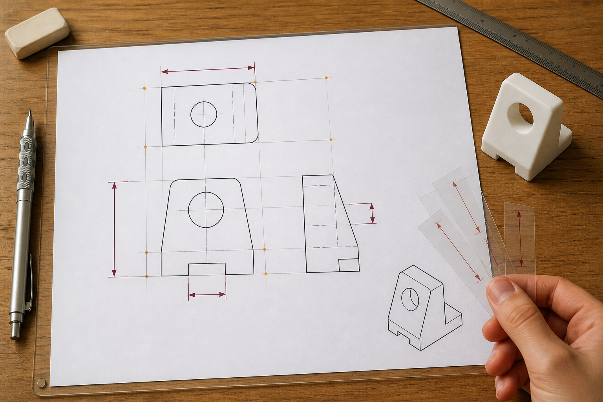
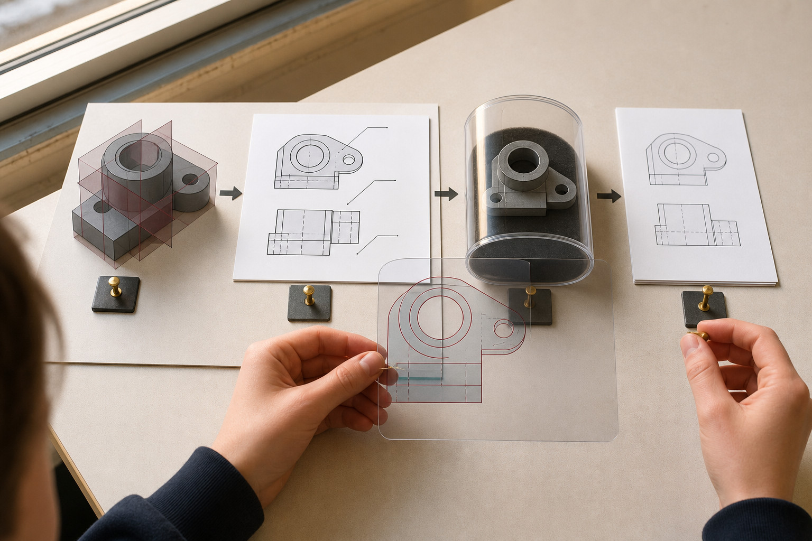
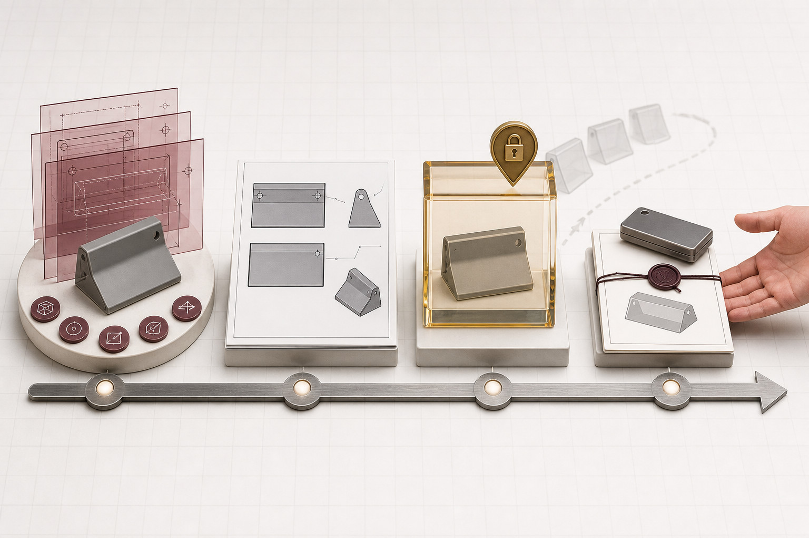
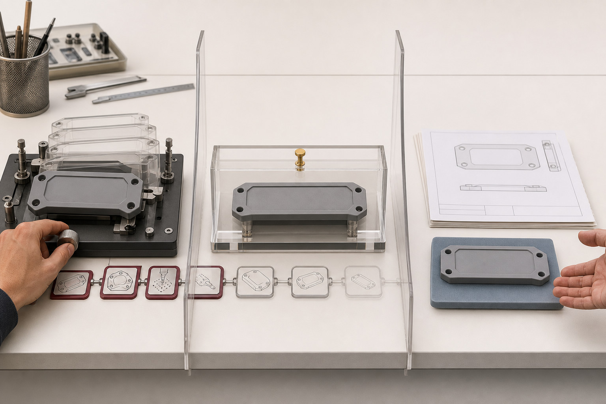
Media pathway
Watch or read for: What makes a named version a useful checkpoint, and what work should remain in the editable workspace?
Use the reading and still-image pathway below; no video is required for this section.
Primary source: Versions and History. Return to the theory explanation.
Applied Learning Activity
Choose the drawing, export and version evidence needed for a stated recipient.
Open the full activityFormative learning evidence
This browser-local record is not formal submission or teacher verification.
Higher-order capstone · evaluate
End-of-module review
Completion means the ten questions were checked and the capstone has text saved. It does not mean submission or a formal mark.